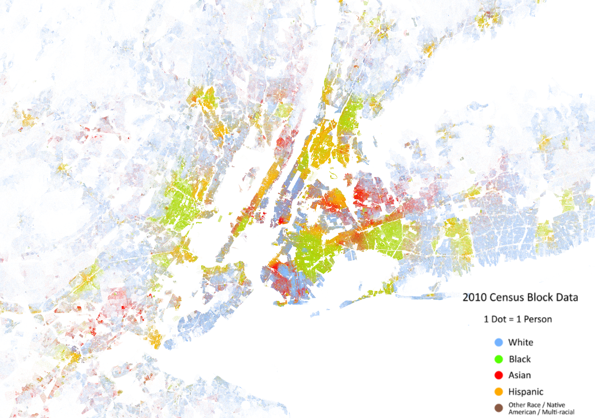
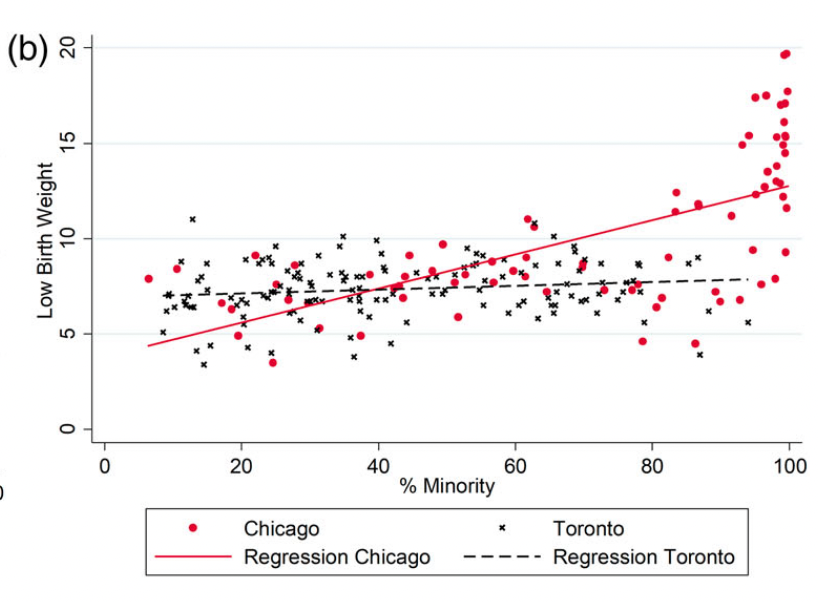
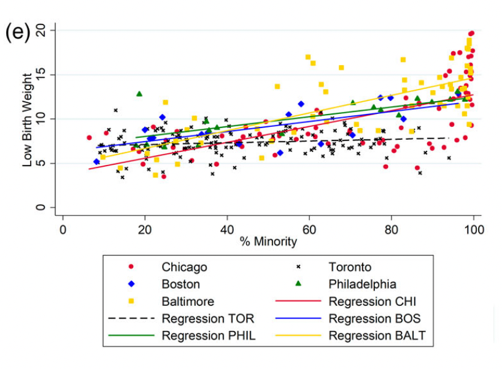

Getting at the fundamental causes of spatial health inequality
EPID 684
Spatial Epidemiology
2/10/2022
Jon Zelner
jzelner@umich.edu
epibayes.io
Agenda
- Wrap up clustering mind-mapping exercise from Monday.
- What is the fundamental cause perspective and how does it relate to spatial epidemiology?
- Between-city and cross-national comparison of the impact of segregation on low birthweight.
- How can we measure spatial segregation?
What is the fundamental cause approach?
- Theoretical perspective on the generation of health inequalities as a function of high-level risks like socioeconomic status (SES) as well as racial discrimination, social stigma, and residential segregation.
- Focuses on how upstream determinants put individuals at risk of risks.
- Important for understanding spatially clustered health outcomes and inequalities.
What makes SES a fundamental cause?
- Reflects differential access to money, information and social power.
- Impacts multiple more-proximal risks for disease.
- Likely to drive risk across multiple health outcomes.
- Association persists even when a proximal mechanism is no longer associated with SES.
Why is racism as a fundamental cause in addition to SES?

Why can’t
socioeconomic status explain all of this association?
Racism has many impacts on health that go beyond and modify SES
- Differential quality of medical treatment.
- Differential access to health-promoting environments.
- Employment and housing discrimination.
- Emotional and physical stress resulting from prolonged exposure to discrimination.
Racial residential segregation reflects spatial clustering of risk caused by racism.

What does segregation do in the generation of health inequalities?
How does the impact of segregation on birth outcomes vary between cities and countries?
- How do DeMaio et al. measure segregation in Toronto and Chicago? What do you think of this metric?
- How does the impact of residential segregation on LBW vary between the U.S. cities and Toronto?
- What would you critique about this study and its conclusions?
Relationships between community composition and LBW

 
Cross-country differences not so different from this

Measles cases in Texarkana, Tex and Texarkana, Ark in 1970
How else could we conceptualize segregation?
Isolation: defined as the proportion of contacts an individual in a minority group in a population has with a member of that same group.
Sometimes paired with the interaction index
Interaction quantifies the proportion of minority group member’s contacts that occur with the majority group.
What are these indices used for?
- Quantify the intensity of contact between groups, e.g. as in residential segregation.
- Measure exposure of potentially infectious individuals to susceptible individuals.
- Describe the distribution of plant species across a geographic area.
How do you measure isolation ?
\[
Z = \sum_{i} \frac{a_{i}}{A} \frac{a_{i}}{n_i}
\]
Where:
- \(a_i\): Number of minority members in area \(i\)
- \(b_i\): Number of majority group members in area \(i\)
- \(A\) total number of minority group members
- \(B\) total number of majority group members, where \(A < B\).
- \(n_i\) number individuals in area \(i\), i.e. \(a_i + b_i\)
How do you measure interaction?
\[
Z = \sum_{i} \frac{a_{i}}{A} \frac{b_{i}}{n_i}
\]
Where:
- \(a_i\): Number of minority members in area \(i\)
- \(b_i\): Number of majority group members in area \(i\)
- \(A\) total number of minority group members
- \(B\) total number of majority group members, where \(A < B\).
- \(n_i\) number individuals in area \(i\), i.e. \(a_i + b_i\)
What happens when we induce more separation?

Isolation is density dependent

When individuals are randomly distributed, isolation equals the minority share of the population.
A problem: Isolation ignores spatial structure

Randomizing locations doesn’t change isolation

Is this really a good representation…

Of this?
A useful metric…with some drawbacks
- Isolation tells us something that may be qualitatively important
- A good fit for a range of epidemiological and social problems
- Limited by lack of information about spatial structure
- Choice of spatial units is critical for interpretation
Next Time
Looking in more depth at the relationship between segregation and communicable and non-communicable diseases: